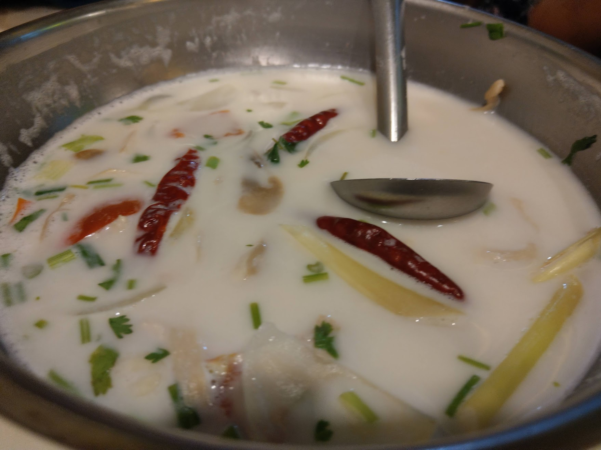
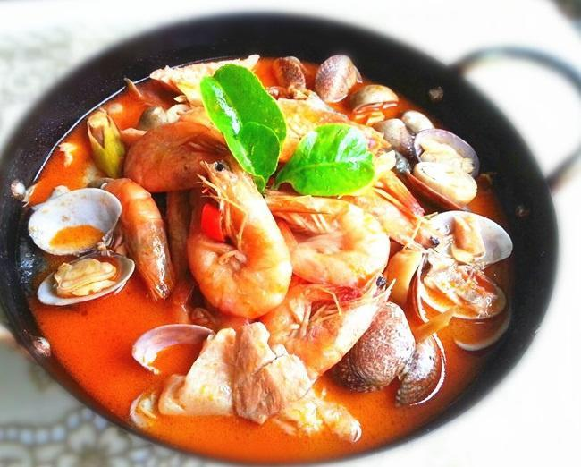

南薑椰汁湯（Tom kha ）
因為椰漿也是這道菜的食材，因此透過它濃白色的湯，就很容易跟其他的冬陰湯分出差別。味道方面，南良薑椰汁湯和其他冬陰比起來奶味更重些。

冬陰（Tom yum ）
「傳統的冬陰是一種清湯（nam sai），在加入蝦頭後，蝦頭的脂肪會使湯口感變得更豐富、濃稠。」《米其林指南》一星餐廳 R.Haan 廚師 Chumpol Jangprai 說。「我們現在常見的濃湯（nam kon），則是加入了辣椒醬、淡奶或椰漿。」

Tom kloang
「傳統上，泰式酸魚湯的甜味來自於在火上烤製以香蕉葉包裹的紅蔥，帶出香氣，再加入湯裏。 這是使湯頭充滿微甜味道的原因，」 Chumpol Jangprai說。 「但現在，人們只使用棕櫚糖。」